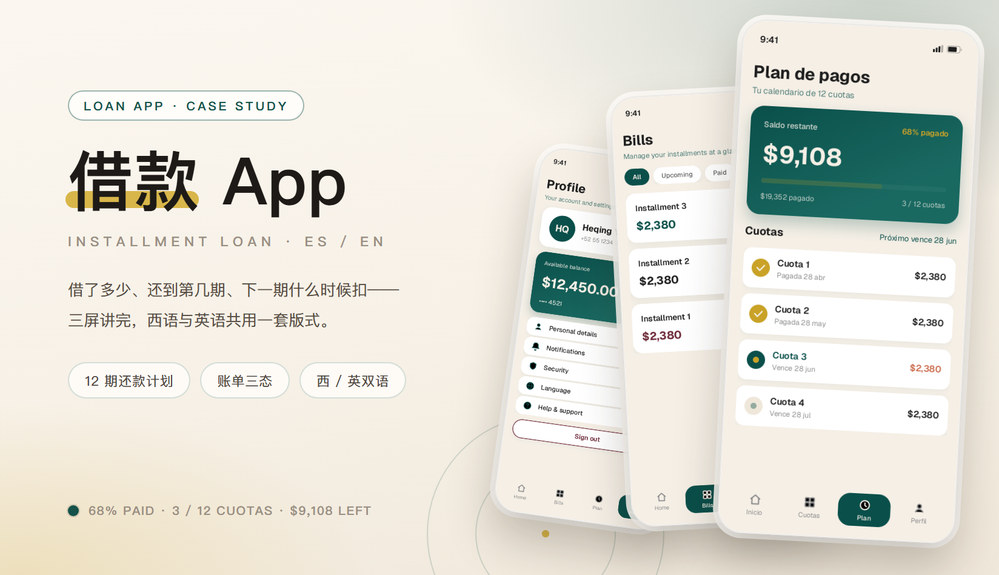
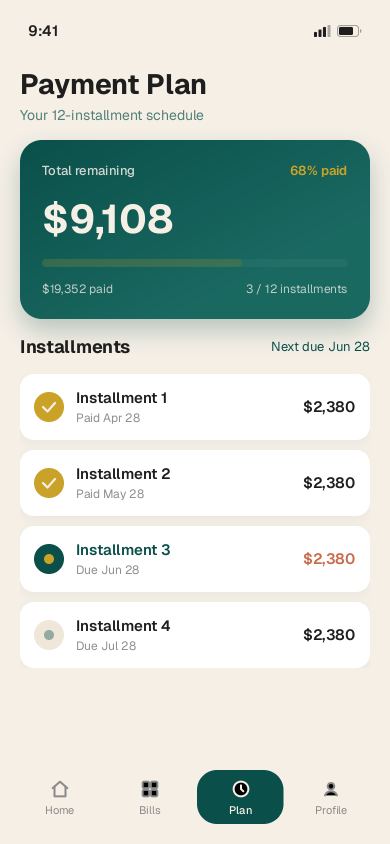
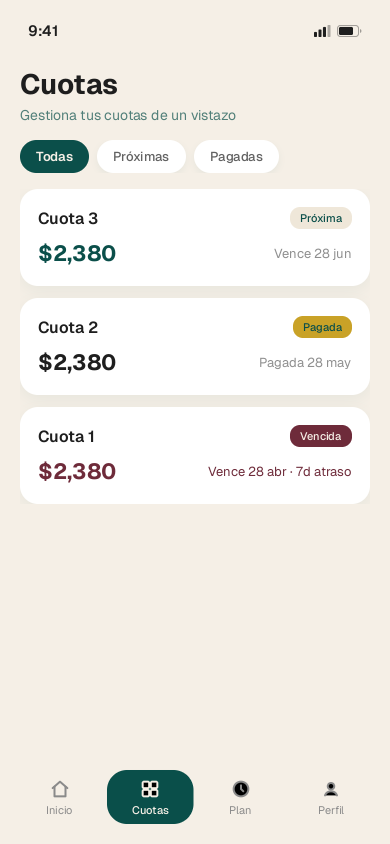
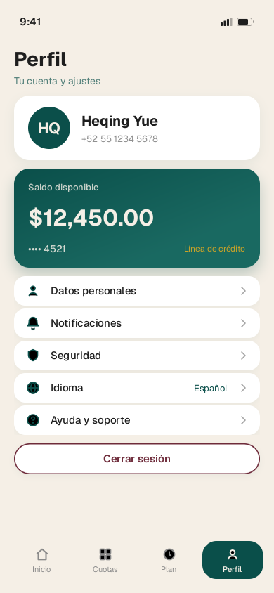
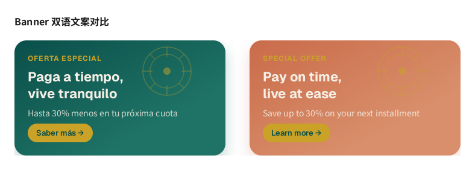

分期借款 App · 西语 / 英语双语钱包
借款类 App 里用户其实只问一句话：「我还欠多少，下一期什么时候扣？」后台越复杂，前台越要一句话答完。这次交付的就是这条答案链路上的三屏——计划页回答总额与进度、账单页回答每一期的状态、账户页回答还剩多少额度可用，西语与英语各一版，同一个版式跑两种语言长度。视觉上把「信任」做成可读的：钱用深松绿、进度用金黄、只有逾期才允许出现酒红。
主视觉

项目背景
墨西哥市场 · 12 期分期 · 西 / 英双语
这款 App 面向墨西哥市场，向当地用户提供 12 期分期借款，界面同时提供西班牙语与英语——客群既有本地西语用户，也有跨境工作、习惯英文的借贷人。金融类界面的信息密度天生高：本金、已还、剩余、期数、到期日、逾期天数、可用额度，全都要在手机上交代清楚。
旧版的思路是「把数据都放上来」：12 期摊成一张长表，金额左对齐、日期缩成小字，用户要滑到第三屏才知道自己还欠多少、有没有逾期。重做只做了一件事——按用户的问题重排信息：先结论（还剩 $9,108、已还 68%），再进度（3 / 12 期），最后才是逐期明细；账单页则把「哪一期要处理」单独拎成一条可筛选的列表。
设计策略
先结论，再明细，最后才是设置
- 计划页把答案压进一张卡：Saldo restante $9,108 占最大字号，右上角 68% pagado，卡底一行 $19,352 pagado · 3 / 12 cuotas · Próximo vence 28 jun——四个数字之外不再放任何装饰。
- 卡下面是 Cuotas 列表：每期一行，左侧状态点（金黄=已还、松绿=最近一期、灰=未到期），中间序号与日期（Pagada 28 abr / Vence 28 jun），金额 $2,380 一律右对齐，扫一列就能看出规律。
- 账单页是「要处理的事」的入口：顶部 All / Upcoming / Paid 三枚胶囊，每行左侧一枚状态圆点、右侧金额，逾期行补一句 7d atraso，让「晚了几天」也成为可读字段，而不只是一个红点。
- 账户页先给钱再给设置：Available balance $12,450.00 与 ···· 4521 单独成一块，下面才是六行等高设置（Personal details / Notifications / Security / Language / Help & support / Sign out），每行一颗线性图标。
- 底部四格 tab（Inicio / Cuotas / Plan / Perfil）里，Plan 单独用深绿胶囊托起：这是用户真正的目的地，其余三格只是路径。
- 双语不是翻译，是同一套版式跑两种长度：西语普遍比英语长 15–20%，所以卡片高度、金额列宽、日期格式（28 abr / Apr 28）都按更长的那一版定，换来的是换语言不换布局。
部分界面截图
三块界面 × 西 / 英两种语言 · 这里放 5 屏
三块界面各出一版西语与英语，下面 5 屏全部来自设计稿原图：计划详情页（Plan de pagos / Payment Plan）、账单页（Cuotas / Bills）、账户页（Perfil）。
把同一屏的两种语言并排放，看的不是翻译对不对，而是版式撑不撑得住：西语 Cuota 3 · Vence 28 jun 与英语 Installment 3 · Due Jun 28 长度差近一倍，卡片高度、金额列与状态点位置都不许动。双版营销 Banner 比例不同，单独放在下一段。





营销 Banner · 西 / 英双版
同一套版式，只换语言

视觉语言
暖纸白底 · 深松绿 · 金黄 · 陶土橙 · 酒红
底色用暖纸白 #f7f1e7 而不是纯白：金融界面全是白卡叠白卡，纯白会把层级糊成一片，暖一点反而能看出「哪张卡在上面」。钱只出现在一种颜色里——深松绿 #14524a，金额卡、余额块与进度条共用同一个底色，用户不用读标签就知道「这块是钱」。金黄 #d8b64a 全站只表示「已完成 / 已到账」：68% pagado、已还那几期的状态点、Banner 里的弧线，从不用来装饰标题。酒红 #4a1728 只有一个用途——逾期：Cuota 1 的状态点、$2,380 与 7d atraso。陶土橙 #c3714f 属于英文版 Banner 的暖色底，是整套色里唯一的「营销色」，只出现在广告位，不进产品界面。文字近黑 #1d1a17、副文 #6b6157、辅助 #9a8f83 三档；圆角跟着信息走：金额卡 24px、列表行 16px、胶囊按钮与底部 tab 999px，金额一列用等宽数字，保证 $2,380 上下永远对齐。
遇到的问题与解决
4 个「金融 + 双语」带来的取舍
问题一屏要塞六七个数字（剩余、已还、期数、比例、到期日、单期金额），用户其实只想确认一件事：我还欠多少。
解决定死字号阶梯与位置：$9,108 独占最大字号与卡片左上，68% pagado 退到右上角辅助位，$19,352 pagado 与 3 / 12 cuotas 收进卡底一行 13px；列表里的金额 15px 右对齐、日期 12px 灰度。同一块屏幕里只允许一个「最大数字」，其余全部降级。
问题西语普遍比英语长，同一张卡片换语言后不是顶破高度，就是把金额挤成两行。
解决版式按更长的那一版定：先用西语出稿，卡片高度留 20% 余量、金额列给固定宽度、标题设一行上限（Saldo restante / Total remaining 都不折行）；日期按语言本地化（28 abr / Apr 28），不共用一套字符串。英语版只是留白变多，布局不重排。
问题逾期状态如果只靠酒红，色弱用户和强光下的屏幕都读不出来。
解决三重编码：状态圆点（酒红逾期 / 松绿最近一期 / 金黄已还 / 灰未到期）+ 明确文案（Pagada / Vence / Overdue）+ 具体天数（7d atraso / 7d late）。颜色只负责让人扫得更快，真正的判断交给文字与数字。
问题底部四格 tab 里，用户最常来的 Plan 混在中间，和首页没有区别。
解决用一颗深绿胶囊把 Plan 托起——和金额卡同一个颜色，把「钱」与「目的地」绑成同一件事；其余三格用线性图标 + 小字，视觉重量压到最低。导航也因此在任何一屏都指向同一条主路径。
从设计到交付
3 步 · 先把问题写成三句话
-
1 · 概念 · 把「还剩多少」定成一句话
先不画界面，先把三个问题写成三句话：我还欠 $9,108、已还 3 期共 $19,352、下一期 6 月 28 日扣 $2,380。再决定每句话落在哪一屏的哪个位置，颜色只用来区分「这是钱」与「这是时间」。
-
2 · 制作 · 三屏 × 双语，同时出稿
计划页先做西语版（更长的那一版），英语版只换文案；账单页把列表行做成组件（状态点 + 标题 + 日期 + 金额四个槽位），逾期只换颜色与一句后缀；账户页把设置压成等高六行；Banner 单独出西 / 英两张，共用弧线与角标。
-
3 · 交付 · 组件、标注与走查
交付三屏 × 双语的组件与页面清单，和开发一起走查：金额千分位与小数位、日期本地化（28 abr / Apr 28）、长姓名与长号码在卡片里的截断、逾期红在小屏上的对比度、屏幕阅读器读金额的顺序（先总额再进度），逐项确认。
交付内容
这次做了什么